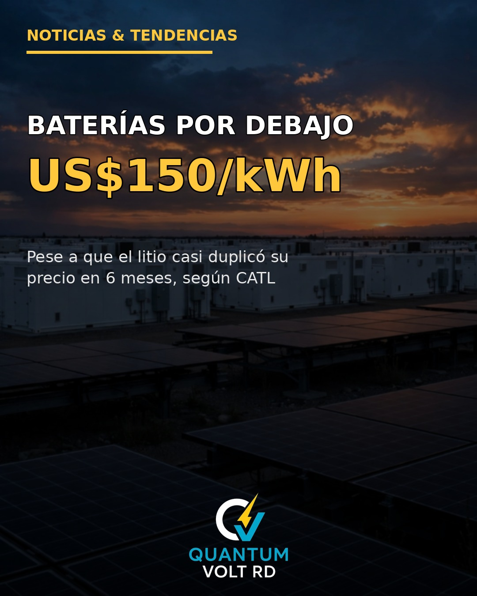

Noticia · 21 de noviembre de 2026
Las baterías siguen baratas, pese a que el litio se disparó
21 de noviembre de 2026 · Energía solar · Baterías

El carbonato de litio casi duplicó su precio spot en 6 meses, y eso presionó el costo de las baterías cerca de un 5%. Pero el fabricante de baterías más grande del mundo, CATL, lo dice claro: la celda misma ya cuesta menos de US$100 por kWh, y un sistema completo de almacenamiento a gran escala sigue por debajo de US$150 por kWh. Lo declaró Ricardo Garro, director comercial para Latinoamérica de CATL, en el Future Energy Summit Colombia 2026.
El litio ya corrigió, pero el precio no baja de inmediato
El litio ya empezó a corregir: al 26 de octubre de 2026 el carbonato de litio estaba en 98.300 yuanes por tonelada, una caída de 22,20% en el último mes. Esa caída, sin embargo, no baja de inmediato el precio final de la batería.
Un dato con fecha: el incentivo chino termina el 1 de enero de 2027
China elimina el beneficio fiscal a sus fabricantes de baterías: era del 9%, bajó al 6% en abril de 2026 y desaparece por completo el 1 de enero de 2027. Eso puede sumar cerca de un 6% al costo de los equipos que se compren el próximo año: hay una ventana para instalar antes de que el incentivo se acabe.
La celda cuesta más de 90% menos que hace una década
El costo de fabricar la celda cayó más de 90% en los últimos 10 a 12 años. Y la tecnología sigue mejorando: desde 2027, las nuevas celdas prometen cero degradación en sus primeros 3 años y una salud de batería (SoH) superior al 75% después de 20 años.
Qué significa para tu casa
Un dato de honestidad: los US$100 y US$150 por kWh son precios a gran escala, de sistemas BESS, no el precio de una batería de casa. Pero la misma caída de costos de la década es la que hace viable la batería en tu hogar. Ayer te contamos que República Dominicana estrena su primera batería gigante de 47 MW a fin de mes. La lección es la misma en tu casa: panel + batería hoy te dan luz propia en la noche y en el apagón, con la tecnología en su mejor momento de precio. En Quantum Volt RD instalamos tu sistema solar con baterías, dimensionado para tu casa o negocio, para que un apagón no te detenga.
Cotiza tu sistema solar con baterías por WhatsApp: 829-778-9089Fuentes
- Energía Estratégica, actualizado el 21 de noviembre de 2026: El litio elevó un 5% los costos de las baterías en los últimos meses, pero CATL revela que los BESS siguen por debajo de USD 150/kWh
← Volver a la página principal de Quantum Volt RD · Ver todas las noticias →